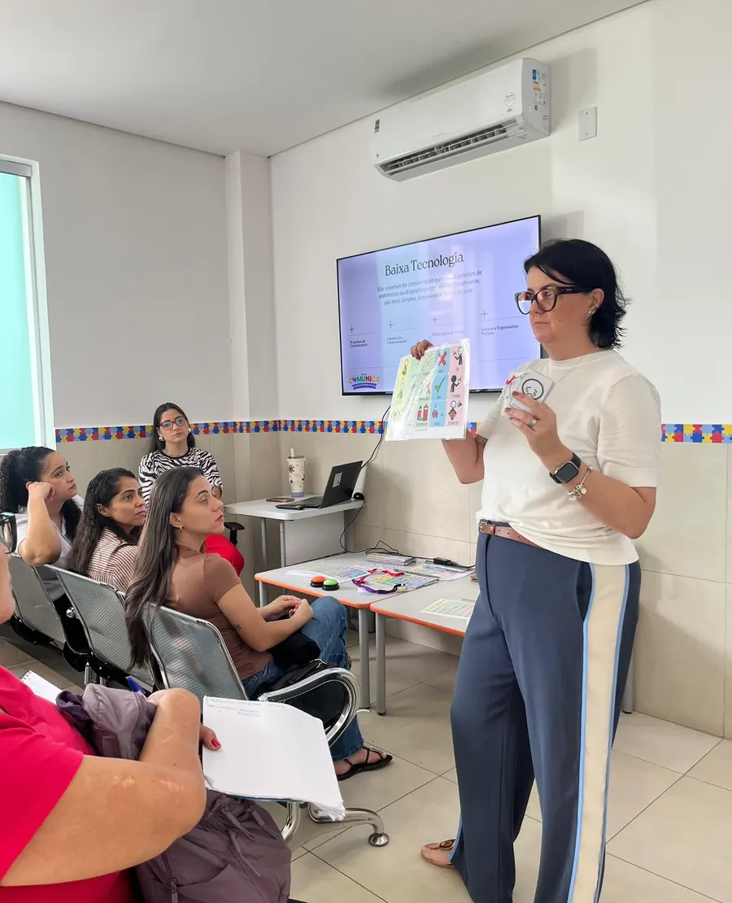

Para pais, familiares e profissionais
Treinamento de CAA: dando voz a todas as formas de comunicar
A Comunicação Aumentativa e Alternativa (CAA) é um conjunto de estratégias, recursos e ferramentas que têm como objetivo ampliar as possibilidades de comunicação de pessoas que apresentam dificuldades na fala ou na linguagem.

O que é a CAA
Muitos caminhos para a mesma conversa
Por meio de imagens, figuras, símbolos, pranchas de comunicação, gestos, aplicativos e dispositivos eletrônicos, a CAA possibilita que a pessoa expresse seus desejos, sentimentos, necessidades, pensamentos e opiniões, favorecendo sua autonomia e participação nas atividades do dia a dia.
Imagens, figuras e símbolos
Pranchas de comunicação
Gestos
Aplicativos e dispositivos eletrônicos
Para quem é indicada?
Crianças, adolescentes e adultos
A CAA pode ser utilizada por crianças, adolescentes e adultos que apresentam dificuldades temporárias ou permanentes na comunicação oral, incluindo pessoas com:
- Transtorno do Espectro Autista (TEA)
- Atrasos no desenvolvimento da linguagem
- Apraxia de fala
- Paralisia cerebral
- Síndromes genéticas e condições neurológicas
- Dificuldades importantes de comunicação e expressão verbal
O treinamento é para quem convive com essa pessoa: pais, familiares e profissionais.
Como funciona?
Avaliar, planejar e montar o sistema de cada pessoa
O curso pode ser realizado de forma individual ou em pequenos grupos, unindo encontros presenciais e online, para avaliar, planejar e montar o sistema de CAA mais adequado às necessidades de cada pessoa.
- Individual ou em pequenos grupos
- Encontros presenciais
- Encontros online
- Um sistema de CAA para cada pessoa
Avaliar
As necessidades de comunicação de cada pessoa.
Planejar
Os recursos e as estratégias de CAA mais adequados.
Montar
O sistema de CAA, para usar no dia a dia.
Fotos do treinamento
Como são os encontros
Turmas presenciais, encontros online e os materiais usados no treinamento. Toque numa imagem para ampliar.


Quem conduz
Quem conduz
Jussara Werner
Fonoaudióloga infantil · CRFa 6-4518
“Acredito que cada pequeno progresso é uma grande vitória.”
Conduz o treinamento de CAA da clínica, para quem convive com a criança no dia a dia.
- Especialista em Linguagem pelo CFFa
- Terapeuta PROMPT nível 1
- Transtornos motores de fala
- CAA
Dúvidas
Perguntas frequentes
Quando é a próxima turma?
As datas são combinadas com a recepção. Mande uma mensagem pelo WhatsApp e pergunte pela próxima turma ou pelo formato individual.
O treinamento é só para pais?
Não. É para pais, familiares e profissionais que convivem com a pessoa que usa ou vai usar a CAA.
Usar CAA atrapalha a criança a falar?
Não. A CAA dá à criança um jeito de se comunicar enquanto a fala se desenvolve, e a fono acompanha os dois caminhos juntos.
Na mesma clínica
Outros programas e especialidades
Dando voz a todas as formas de comunicar.
Pergunte pela próxima turma ou pelo formato individual. A recepção explica as datas e como participar.